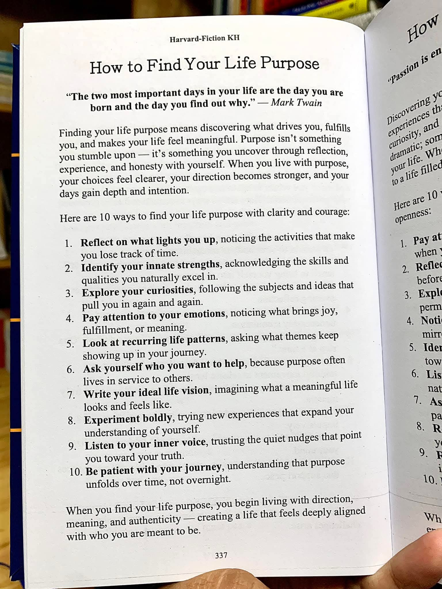

Hujan turun dengan presisi matematis di kawasan Ciumbuleuit, Bandung. Rintiknya menghantam kaca jendela kedai kopi berdesain industrial tempat empat orang sahabat itu berkumpul. Dinding bata ekspos, pipa-pipa besi hitam yang mengular di langit-langit, serta pencahayaan temaram dari lampu pijar Edison memberikan atmosfer hangat yang kontras dengan udara dingin di luar. Aroma biji kopi Arabika yang baru diseduh bercampur dengan wangi tanah basah, menciptakan harmoni yang akrab bagi mereka.
Mereka berempat adalah alumni Teknik Industri dari sebuah institut ternama di Bandung. Sebuah kelompok yang terbiasa melihat dunia melalui lensa efisiensi, manajemen rantai pasok, ergonomi, dan optimasi sistem. Namun malam ini, topik yang terhampar di atas meja kayu jati Belanda itu bukanlah tentang Six Sigma atau metode Lean Manufacturing.
Di tengah meja, di antara cangkir-cangkir kopi yang mulai mendingin, tergeletak sebuah buku dengan halaman terbuka. Alya, satu-satunya wanita dalam kelompok itu, baru saja meletakkannya dengan senyum simpul. Alya adalah seorang spesialis makroergonomi yang kini bekerja di sebuah perusahaan konsultan desain berbasis human-centered. Ia selalu percaya bahwa secanggih apa pun sebuah sistem, manusia adalah variabel paling kompleks yang harus dipahami emosi dan kebutuhannya.

"Coba kalian baca kutipan Mark Twain ini," ucap Alya, jari telunjuknya yang lentik mengetuk bagian atas halaman buku tersebut. Suaranya lembut namun tegas, menembus alunan musik lo-fi yang diputar pelan oleh barista.
"The two most important days in your life are the day you are born and the day you find out why."
Raka, pria berkacamata dengan rahang tegas yang bekerja sebagai manajer operasional di sebuah perusahaan manufaktur multinasional, menyandarkan punggungnya ke kursi besi. Ia melipat kedua tangannya di dada. Otaknya yang analitis langsung mencoba membedah kalimat tersebut.
"Menemukan alasan mengapa kita dilahirkan. Terdengar sangat tidak terukur, Al," komentar Raka dengan nada skeptis yang khas. "Di pabrik, setiap mesin memiliki manual fungsi yang jelas. Throughput-nya terukur. Downtime-nya bisa diprediksi. Tapi manusia? Mengukur 'tujuan hidup' itu seperti mencoba mengukur volume air hujan dengan jaring. Variabelnya terlalu banyak dan tidak terkendali."
Bima terkekeh pelan. Pria dengan rambut sedikit gondrong yang diikat rapi ini adalah prototipe insinyur yang banting setir menjadi technopreneur. Ia sudah mendirikan tiga perusahaan rintisan; dua di antaranya gagal total, dan yang ketiga kini sedang berjuang merangkai pendaan seri A. "Itulah bedanya kita dengan mesin produksi, Raka. Kita bukan sistem tertutup. Aku membaca sepuluh poin di bawah kutipan itu," Bima menunjuk ke arah buku, "dan menurutku ini mirip dengan fase prototyping dalam pengembangan produk."
Alya mengangguk setuju, matanya berbinar melihat umpan diskusinya ditanggapi. "Tepat sekali, Bim. Lihat poin kedelapan: Experiment boldly, trying new experiences that expand your understanding of yourself. Itu kan pada dasarnya adalah melakukan iterasi. Gagal, pelajari, perbaiki. Tapi poin yang paling menyentuhku adalah poin keenam."
"Ask yourself who you want to help, because purpose often lives in service to others," Alya membacakan poin tersebut dengan perlahan. "Sebagai insinyur industri, kita dididik untuk mendesain sistem yang efisien. Tapi untuk siapa efisiensi itu? Kalau hanya untuk menekan biaya overhead perusahaan tanpa memikirkan kesejahteraan operator di lapangan, bukankah kita kehilangan tujuan esensial kita sebagai manusia yang seharusnya membawa manfaat?"
Sejenak, keheningan menyelimuti meja mereka. Hanya suara hujan dan denting sendok kopi yang terdengar. Raka tampak termenung, mungkin teringat pada kebijakan pemotongan jam lembur buruh yang baru saja ia tandatangani minggu lalu demi efisiensi kuartal ketiga. Bima menggosok dagunya, merenungkan apakah aplikasi yang sedang ia bangun benar-benar memecahkan masalah masyarakat atau sekadar solusi yang mencari-cari masalah.
Lalu, terdengar suara tawa pelan yang renyah. Suara itu berasal dari Sena.
Sena adalah anomali di antara mereka. Lulusan dengan IPK tertinggi di angkatannya, memiliki pemahaman kalkulus stokastik yang membuat dosen geleng-geleng kepala, namun ia memilih bekerja sebagai analis data independen yang waktu kerjanya sangat fleksibel. Alasannya sederhana: ia butuh waktu untuk bermain saksofon. Sena adalah seorang penikmat dan pemain musik jazz yang fanatik. Baginya, angka dan nada adalah dua bahasa dari satu semesta yang sama.
"Kalian ini terlalu kaku, kawan-kawan," ucap Sena sambil mengangkat cangkir kopinya. Matanya yang tajam di balik kacamata vintage menatap satu per satu sahabatnya. "Kalian melihat sepuluh poin dari buku ini seperti melihat sebuah SOP (Standard Operating Procedure) atau algoritma linear. Langkah satu ke langkah dua, lalu ke langkah tiga. Kalau begitu cara kalian membacanya, kalian tidak akan pernah menemukan tujuan hidup itu."
"Lalu, bagaimana sang maestro melihatnya?" tantang Bima sambil tersenyum menantang.
Sena meletakkan cangkirnya perlahan. Ia mengambil buku tersebut dan memutarnya hingga menghadap ke arahnya. Ia membaca kesepuluh poin itu dalam diam selama beberapa detik, seolah sedang membaca partitur musik yang rumit. Udara dingin Bandung terasa menyusup dari celah pintu kedai yang terbuka sejenak oleh pelanggan yang baru masuk.
"Tujuan hidup," Sena mulai berbicara, suaranya tenang dan berirama, "bukanlah sebuah persamaan matematika yang bisa diselesaikan dengan rumus pasti. Tujuan hidup, teman-teman, adalah sebuah komposisi Modal Jazz."
Raka mengernyitkan dahi. "Modal Jazz? Aku hanya tahu jazz itu musik yang notasinya berantakan."
Sena tersenyum maklum. "Itu pandangan awam. Biar aku jelaskan. Sebelum tahun lima puluhan, jazz didominasi oleh era Bebop dan Swing. Keduanya sangat mengandalkan progresi akor yang cepat dan rumit. Pemusik harus terus berganti kunci dengan cepat. Itu persis seperti kehidupan modern yang dijalani banyak orang, atau seperti sistem produksi massal yang Raka jalankan. Bergerak cepat, mengikuti metrik sosial yang sudah ditentukan: sekolah, kuliah, kerja, menikah, pensiun. Semuanya harus sesuai chord progression yang ditektekan oleh masyarakat."
Sena menunjuk poin kedua pada buku: Identify your innate strengths.
"Tapi kemudian," lanjut Sena, matanya mulai memancarkan gairah yang selalu muncul saat ia bicara soal musik, "datanglah Miles Davis dengan album Kind of Blue. Ia memperkenalkan Modal Jazz. Dalam modal jazz, musisi tidak lagi dikekang oleh progresi akor yang beruntun. Alih-alih akor, mereka diberi sebuah 'mode' atau skala nada tunggal. Mereka bisa diam di satu mode itu selama bermenit-menit."
Alya mencondongkan tubuhnya ke depan, tertarik dengan analogi tersebut. "Lalu apa hubungannya dengan sepuluh cara menemukan tujuan hidup ini, Sen?"
"Hubungannya sangat erat, Al," jawab Sena. "Mode atau skala nada dasar dalam modal jazz itu adalah innate strengths kita (poin 2), dan hal-hal yang membuat kita bersemangat atau lights you up (poin 1). Itu adalah struktur dasar, fondasi genetik dan minat bawaan kita. Sebagai insinyur industri, fondasi kita adalah pemikiran sistematis."
Sena menggeser jarinya ke poin ketiga dan kedelapan: Explore your curiosities dan Experiment boldly.
"Karena dalam modal jazz tidak ada perubahan akor yang memaksa, musisi memiliki kebebasan ruang dan waktu yang sangat luas untuk berimprovisasi. Mereka harus mengeksplorasi rasa ingin tahu mereka terhadap nada-nada yang melenceng namun tetap harmonis. Miles Davis pernah berkata, 'Do not fear mistakes. There are none.' Itulah eksperimen yang berani. Saat Bima gagal dengan dua startup-nya, itu bukan kesalahan sistem. Itu adalah disonansi nada yang sedang mencari resolusinya. Bima sedang berimprovisasi dalam mode hidupnya."
Bima tersenyum lebar, tampak bangga kegagalannya diklasifikasikan sebagai sebuah seni tingkat tinggi.
Sena melanjutkan analisanya, kini menunjuk poin keempat dan kelima: Pay attention to your emotions dan Look at recurring life patterns.
"Bagaimana seorang pemain saksofon atau trompet tahu kapan improvisasinya terdengar indah atau malah merusak lagu? Apakah ia menghitung frekuensi nadanya? Tidak. Ia merasakannya. Ia memperhatikan emosinya (poin 4). Dan kalau kalian mendengarkan solo John Coltrane berulang-ulang, kalian akan menyadari ada pola (poin 5) atau licks tertentu yang sering ia mainkan karena itu adalah representasi jiwanya. Sama seperti kita mencari tujuan hidup, kita harus melihat pola apa yang terus berulang dalam hidup kita. Masalah apa yang secara natural selalu ingin kita selesaikan."
Raka, yang sejak tadi mendengarkan dengan saksama, mulai mengendurkan lipatan tangannya. "Aku mulai paham arah bicaramu, Sen. Dalam manajemen kualitas, ini mirip dengan Continuous Improvement atau Kaizen. Tapi bedanya, parameternya di sini adalah perasaan dan intuisi, bukan sekadar data kuantitatif."
"Tepat!" Sena menjentikkan jarinya. Ia lalu menatap Alya. "Dan poin yang kamu sebutkan tadi, Al. Poin keenam tentang pelayanan kepada orang lain. Dalam sebuah band jazz, improvisasi individu itu penting, tapi yang lebih penting adalah comping (mengiringi) musisi lain yang sedang mengambil solo. Kita mendengarkan mereka, kita memberi ruang, kita mendukung melodi mereka agar bersinar. Kita tidak bisa bermain jazz sendirian dan mengabaikan interaksi dengan pemain bas atau drummer. Purpose often lives in service to others. Keahlian teknik industri kita hanya akan menjadi sekadar perhitungan kalkulator jika tidak digunakan untuk 'mengiringi' dan memudahkan kehidupan masyarakat luas."
Malam semakin larut, namun diskusi di meja itu semakin hangat. Analogi Sena tentang Modal Jazz telah membuka dimensi baru dalam cara mereka mencerna teks sederhana dari halaman buku tersebut.
Sena menyentuh poin kesembilan: Listen to your inner voice.
"Di tengah bisingnya ekspektasi industri dan tuntutan kapitalisme—atau dalam analogi musik, di tengah hiruk pikuk suara kota—kita harus memiliki ruang resonansi di dalam diri kita sendiri. Mendengarkan suara batin itu membutuhkan keheningan. Keheningan inilah yang sering kali diabaikan oleh kita yang terlalu sibuk memangkas lead time produksi."
Terakhir, jarinya berhenti di poin kesepuluh: Be patient with your journey, understanding that purpose unfolds over time, not overnight.
"Dan inilah esensi dari semuanya. Kesabaran. Sebuah pertunjukan jazz yang epik tidak terjadi dalam satu menit pertama. Ia dibangun perlahan. Tema utama diperkenalkan, lalu didekonstruksi, diacak, dieksplorasi hingga ke batas dissonansi, sebelum akhirnya dirangkai kembali menjadi sebuah resolusi yang megah di akhir lagu. Mencari tujuan hidup bukan proyek Agile Sprint yang selesai dalam dua minggu. Ia adalah perjalanan seumur hidup."
Alya menatap Sena dengan kagum. "Interpretasi yang sangat indah, Sena. Kamu berhasil menjembatani logika struktural insinyur dengan kedalaman rasa seorang seniman. Membuat teks di buku ini terasa lebih hidup dan berdimensi."
Bima mengangkat cangkir kopinya yang sudah kosong. "Untuk eksperimen, untuk keberanian berimprovisasi, dan untuk pelayanan yang bermakna!" ucapnya setengah berseru.
Raka tersenyum tipis, sebuah pemandangan langka. Ia mengangkat cangkirnya sendiri. "Dan untuk kesabaran menemukan pola di tengah kekacauan sistem."
Alya dan Sena ikut mengangkat cangkir mereka. Empat cangkir beradu pelan di udara, menciptakan denting kecil yang harmonis dengan suara rintik hujan yang mulai mereda di luar. Mereka menyadari bahwa malam itu, di sebuah kedai kopi bergaya industrial di Bandung, mereka tidak menemukan jawaban pasti tentang apa tujuan hidup mereka masing-masing.
Namun, seperti yang tertulis di paragraf penutup halaman buku itu: "When you find your life purpose, you begin living with direction, meaning, and authenticity."
Mereka mungkin belum menemukan bentuk akhir dari tujuannya, tetapi mereka kini tahu instrumen apa yang mereka pegang, mereka tahu mode dasar apa yang menjadi kekuatan mereka, dan mereka sepakat untuk terus bermain, berimprovisasi, dan melayani harmoni yang lebih besar. Mereka adalah insinyur industri yang terlatih merancang sistem, namun kini mereka belajar merancang kebermaknaan dengan jiwa seorang musisi jazz.
Di luar, awan gelap mulai bergeser, memperlihatkan pendar bulan yang memantul di aspal basah jalanan Braga. Hujan telah berhenti. Udara malam Bandung terasa lebih bersih, sebersih pikiran keempat sahabat itu yang kini siap melanjutkan eksperimen hidup mereka masing-masing. Mereka siap menghadapi hari esok, tidak sekadar sebagai mesin pencetak efisiensi, melainkan sebagai manusia-manusia cerdas yang berdansa dengan ketidakpastian melalui melodi kehidupan yang otentik.